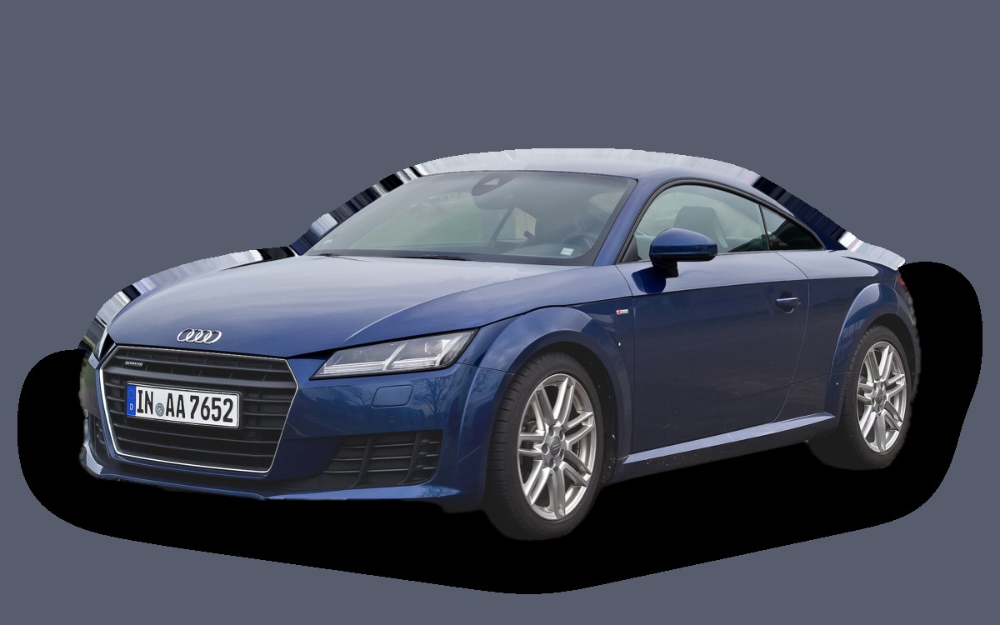

What does a Audi TT cost per month?
A 2020 Audi TT costs about SEK 4,278 a month, all in.
SEK 4,278per month, 2020 model
SEK 290,000price, 2020 model
SEK 528,600last new price
Cvalue grade (2020)

_–_Frontansicht,_3._April_2015,_Düsseldorf_(bearb_Sp_2).jpg){kind=link}
Monthly cost by model year
| Model year | Version in the calculation | Price | Per month | Grade |
|---|---|---|---|---|
| 2023 | 45 TFSI quattro 245, Standard | SEK 356,000 | SEK 4,589 | D |
| 2020 | 45 TFSI quattro 245, Standard | SEK 290,000 | SEK 4,278 | C |
| 2017 | 45 TFSI quattro 245, Standard | SEK 245,000 | SEK 4,228 | D |
Based on 5 years of ownership and 12,500 km a year, with fuel prices from 2026-10-22. The monthly cost includes depreciation, fuel, servicing and repairs, insurance and road tax.
How the cost splits for a 2020 car
- Depreciation: SEK 1,180/mo
- Fuel: SEK 1,530/mo
- Servicing and repairs: SEK 837/mo
- Insurance: SEK 602/mo
- Road tax: SEK 128/mo
Used prices in ads
| Model year | Median price | Ads | Typical mileage |
|---|---|---|---|
| 2019 | SEK 322,600 | – | – |
| 2016 | SEK 269,600 | – | – |
| 2015 | SEK 329,900 | 3 | 79,000 km |
The median price in Swedish ads by model year in October 2026 (source: AutoUncle). Ad prices are asking prices, and the final price may be lower.
Engines and versions
| Engine | Fuel | Power | 0–100 km/h | Consumption (WLTP) | Range | Model years | Extra cost |
|---|---|---|---|---|---|---|---|
| 45 TFSI quattro 245 | Petrol | 245 hp | 5.2 s | 7.1 l/100 km | – | 2015–2023 | – |
| TTS 320 | Petrol | 320 hp | 4.5 s | 7.4 l/100 km | – | 2015–2023 | +SEK 112,400 |
| TT RS 400 | Petrol | 400 hp | 3.7 s | 9.1 l/100 km | – | 2015–2023 | +SEK 236,200 |
- Trim: Standard, S line (+SEK 41,400)
Facts
- Body
- Sports car
- Model years
- 2015–2023
- Last new price
- SEK 528,600
- Boot
- 305 litres
- Euro NCAP
- 4 of 5 stars
- New-car warranty
- 3 years
- Reliability
- 4 of 5
- Comprehensive insurance, estimate
- SEK 9,400/yr
- Servicing, estimate
- SEK 4,400/yr
Common faults to watch for
- Leaking plastic water pump and thermostat housing, repair about SEK 6,500
- Haldex pump (AWD), repair about SEK 7,000
- DSG gearbox (mechatronics), repair about SEK 18,000
The faults apply to some engines and model years. The calculator works out the risk for the exact version you choose.
Pros and cons
Pro
Stylish, quick coupé that's good value used.
Con
Cramped rear seat, and no longer made.
Similar cars
 BMW Z4SEK 4,821/mo as a 2023 model
BMW Z4SEK 4,821/mo as a 2023 model Mazda MX-5SEK 3,109/mo as a 2023 model
Mazda MX-5SEK 3,109/mo as a 2023 model BMW M2SEK 8,293/mo as a 2023 model
BMW M2SEK 8,293/mo as a 2023 model- Porsche 911SEK 11,271/mo as a 2023 model
 Ford MustangSEK 11,387/mo as a 2026 model
Ford MustangSEK 11,387/mo as a 2026 model
Updated 2026-10-27 · ad data Oct 2026